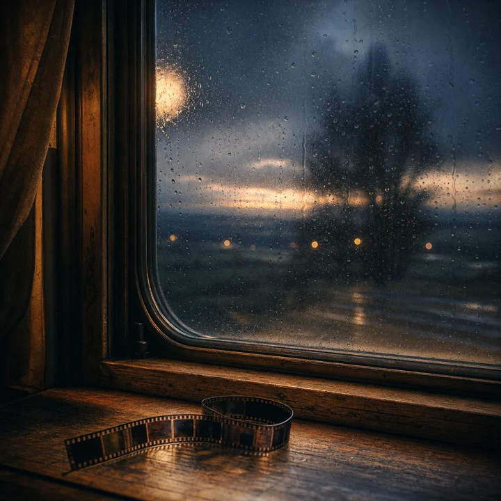
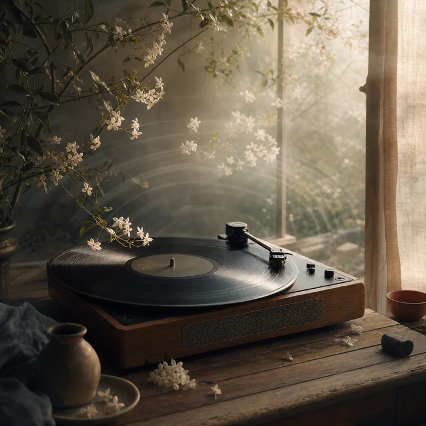

Journal · 2026-07-18
Mon Mode de Vie · 本地工作台
今天的对话从一句"出事了"开始。C 盘几乎没有余地，Mon Mode de Vie 像一间塞满纸箱的屋子，终于到了必须搬家的时候。于是我们把项目挪到 D 盘，重新确认文件、图片和打开方式，让 localhost 以后认得这处新地址。
搬完家，真正费心的整理才开始。我们翻开《朝花夕拾小故事》的 PDF，把第三章里散落在页面中的日记逐篇认出：日期成为文件名，正文保留原来的语气，六张原图回到各自的故事里。二十三个日子第一次像一列可以慢慢走过的房间，而不是一份只能上下翻页的文档。
下午又去看了 lvy-neko 的网页，也研究了下载到本地的前端文件。真正值得带回来的并不只是颜色、圆角或某一块排版，而是那种让访客愿意停一停的节奏：页面不急着汇报自己完成了多少，更像有人把椅子拉开，说"你先坐，我慢慢讲"。
为了给这间会客厅添一点可见的心情，我们还生成了三张图：月光下自动翻页的书、雨夜窗边蜷起的胶片、晨光与茉莉之间旋转的唱片。它们分别落在书、影、音的角落，也成了今天留下来的三枚书签。
后来电脑意外关机，工作像被突然合上的书夹在了中间。第二天重新打开，才发现一个很具体的教训：做出一个漂亮的独立预览还不够，真正被 localhost 打开的项目也必须同步更新。访客看到的页面，才是最后的答案。
这也替网站写下了一条清楚的规矩：Journal 就安静地放日记，最新的日子在最上面；"坐下来聊一聊"的纪念日茶话留在主页。一个地方用来阅读，一个地方用来重逢，不再让两种心情挤在同一张桌子上。
如果以后又忙着做统计、标题和完成报告，愿 2026 年 7 月 18 日提醒我：人回来不是为了看一块项目进度牌，而是为了找到某一天，认出一段旧话，然后感觉这间屋子还记得自己。


Today's conversation began with the words, 'Something happened.' The C drive had almost no room left, and Mon Mode de Vie felt like a house crammed with moving boxes: it had finally reached the point when it simply had to move. So we moved the project to the D drive, checked the files, images, and way of opening it all over again, and made sure localhost would recognize this new address from now on.
Once the move was over, the truly painstaking sorting began. We opened the PDF of Chaohua Xishi Xiaogushi and identified, one by one, the diary entries scattered through Chapter Three: dates became filenames, the body text kept its original voice, and six original images returned to the stories they belonged to. For the first time, those twenty-three days felt like a row of rooms one could slowly walk through, rather than a document one could only scroll up and down.
In the afternoon, we looked again at lvy-neko's website and also studied the front-end files downloaded to the computer. What was truly worth bringing back was not just the colors, rounded corners, or one particular piece of layout, but a rhythm that made visitors willing to pause for a moment: the page did not rush to report how much it had completed. It felt more like someone pulling out a chair and saying, 'Sit down first. I'll tell you slowly.'
To give this sitting room a little visible feeling, we also generated three images: a book turning its own pages in moonlight, a strip of film curled up beside a rainy-night window, and a record spinning between morning light and jasmine. They settled respectively into the corners for books, films, and music, and became three bookmarks left behind by this day.
Later, the computer shut down unexpectedly, and the work was caught in the middle like something trapped inside a book that had suddenly snapped closed. When we opened it again the next day, one very concrete lesson became clear: making a beautiful standalone preview was not enough; the actual project opened through localhost also had to be updated in step. The page visitors see is the final answer.
This also wrote a clear rule for the website: Journal quietly holds the diary entries, with the newest day at the top, while the anniversary tea talk called 'Sit down and have a chat' stays on the home page. One place is for reading and the other for meeting again, so the two moods no longer have to crowd around the same table.
If I get busy again with statistics, headings, and completion reports, may July 18, 2026 remind me of this: people do not return to look at a project progress board. They return to find a certain day, recognize an old remark, and feel that this house still remembers them.
La conversation d'aujourd'hui a commencé par ces mots : « Il y a eu un problème. » Le disque C n'avait presque plus de place et Mon Mode de Vie ressemblait à une maison encombrée de cartons : le moment était enfin venu de déménager. Nous avons donc déplacé le projet sur le disque D, revérifié les fichiers, les images et la manière de l'ouvrir, afin que localhost reconnaisse désormais cette nouvelle adresse.
Une fois le déménagement terminé, le vrai travail minutieux de rangement a commencé. Nous avons ouvert le PDF de Chaohua Xishi Xiaogushi et reconnu, une à une, les entrées de journal dispersées dans le troisième chapitre : les dates sont devenues des noms de fichiers, le texte a conservé son ton d'origine et six images originales ont retrouvé chacune leur histoire. Pour la première fois, ces vingt-trois journées ressemblaient à une rangée de pièces que l'on pouvait parcourir lentement, plutôt qu'à un document que l'on ne pouvait que faire défiler de haut en bas.
Dans l'après-midi, nous sommes retournés voir le site de lvy-neko et avons aussi étudié les fichiers front-end téléchargés sur l'ordinateur. Ce qui méritait vraiment d'être rapporté ne se limitait pas aux couleurs, aux coins arrondis ou à tel élément de mise en page, mais tenait à un rythme qui donnait envie au visiteur de s'arrêter un instant : la page ne se pressait pas d'annoncer tout ce qu'elle avait accompli. Elle ressemblait plutôt à quelqu'un qui tirait une chaise en disant : « Assieds-toi d'abord, je vais te raconter tranquillement. »
Pour donner à ce salon un peu d'émotion visible, nous avons également créé trois images : un livre dont les pages se tournent toutes seules au clair de lune, une pellicule recroquevillée près d'une fenêtre un soir de pluie, et un disque qui tourne entre la lumière du matin et le jasmin. Elles ont pris place dans les coins consacrés aux livres, aux films et à la musique, et sont devenues les trois marque-pages laissés par cette journée.
Plus tard, l'ordinateur s'est éteint par accident et le travail s'est retrouvé coincé au milieu, comme pris dans un livre brusquement refermé. En le rouvrant le lendemain, une leçon très concrète s'est imposée : produire un joli aperçu indépendant ne suffisait pas ; le véritable projet ouvert dans localhost devait lui aussi être mis à jour en même temps. La page que voit le visiteur constitue la réponse finale.
Cela a aussi inscrit une règle claire pour le site : Journal accueille tranquillement les entrées, la plus récente tout en haut, tandis que le thé anniversaire « Viens t'asseoir, discutons un peu » reste sur la page d'accueil. Un endroit sert à lire, l'autre à se retrouver, afin que ces deux humeurs ne se serrent plus autour de la même table.
Si je me retrouve un jour à courir après les statistiques, les titres et les rapports d'achèvement, puisse le 18 juillet 2026 me le rappeler : on ne revient pas pour consulter un tableau d'avancement, mais pour retrouver un certain jour, reconnaître de vieilles paroles, puis sentir que cette maison se souvient encore de nous.
Das heutige Gespräch begann mit den Worten: "Es ist etwas passiert." Auf Laufwerk C war beinahe kein Platz mehr, und Mon Mode de Vie wirkte wie ein Haus voller Umzugskartons: Nun war endgültig der Moment gekommen, an dem es umziehen musste. Also verschoben wir das Projekt auf Laufwerk D, überprüften Dateien, Bilder und die Art, es zu öffnen, noch einmal und sorgten dafür, dass localhost diese neue Adresse künftig kannte.
Nach dem Umzug begann erst die wirklich mühsame Sortierarbeit. Wir öffneten die PDF von Chaohua Xishi Xiaogushi und erkannten nach und nach die im dritten Kapitel verstreuten Tagebucheinträge: Aus den Daten wurden Dateinamen, der Text behielt seinen ursprünglichen Ton, und sechs Originalbilder kehrten in die Geschichten zurück, zu denen sie gehörten. Zum ersten Mal wirkten diese dreiundzwanzig Tage wie eine Reihe von Zimmern, durch die man langsam gehen konnte, und nicht wie ein Dokument, das sich nur nach oben und unten scrollen ließ.
Am Nachmittag sahen wir uns noch einmal die Website von lvy-neko an und untersuchten auch die auf den Rechner heruntergeladenen Frontend-Dateien. Wirklich mitnehmen ließ sich nicht bloß die Farbgebung, die abgerundeten Ecken oder ein bestimmter Ausschnitt des Layouts, sondern jener Rhythmus, der Besucher zum kurzen Innehalten einlud: Die Seite beeilte sich nicht, darüber Bericht zu erstatten, wie viel sie schon geschafft hatte. Sie fühlte sich eher an wie jemand, der einen Stuhl heranzieht und sagt: "Setz dich erst einmal. Ich erzähle es dir ganz in Ruhe."
Um diesem Empfangszimmer ein wenig sichtbare Stimmung zu geben, erzeugten wir außerdem drei Bilder: ein Buch, dessen Seiten sich im Mondlicht von selbst umblättern, einen Filmstreifen, der sich an einem verregneten Abend am Fenster zusammenrollt, und eine Schallplatte, die sich zwischen Morgenlicht und Jasmin dreht. Sie fanden ihren Platz in den Ecken für Bücher, Filme und Musik und wurden zu drei Lesezeichen, die dieser Tag zurückließ.
Später schaltete sich der Computer unerwartet aus, und die Arbeit blieb mittendrin stecken wie etwas, das von einem plötzlich zugeschlagenen Buch eingeklemmt worden war. Als wir am nächsten Tag alles wieder öffneten, zeigte sich eine ganz konkrete Lektion: Eine schöne eigenständige Vorschau zu bauen reichte nicht; auch das tatsächlich über localhost geöffnete Projekt musste zeitgleich aktualisiert werden. Die Seite, die Besucher sehen, ist die endgültige Antwort.
Damit schrieb der Tag auch eine klare Regel für die Website fest: Im Journal liegen die Tagebucheinträge still beieinander, der neueste ganz oben, während die Jubiläums-Teerunde "Setz dich, lass uns ein wenig reden" auf der Startseite bleibt. Ein Ort dient dem Lesen, der andere dem Wiedersehen, damit sich die beiden Stimmungen nicht mehr an denselben Tisch drängen müssen.
Falls ich mich später wieder in Statistiken, Überschriften und Abschlussberichten verliere, soll mich der 18. Juli 2026 daran erinnern: Menschen kehren nicht zurück, um auf eine Projektfortschrittsanzeige zu schauen. Sie kommen zurück, um einen bestimmten Tag zu finden, alte Worte wiederzuerkennen und dann zu spüren, dass dieses Haus sich noch an sie erinnert.